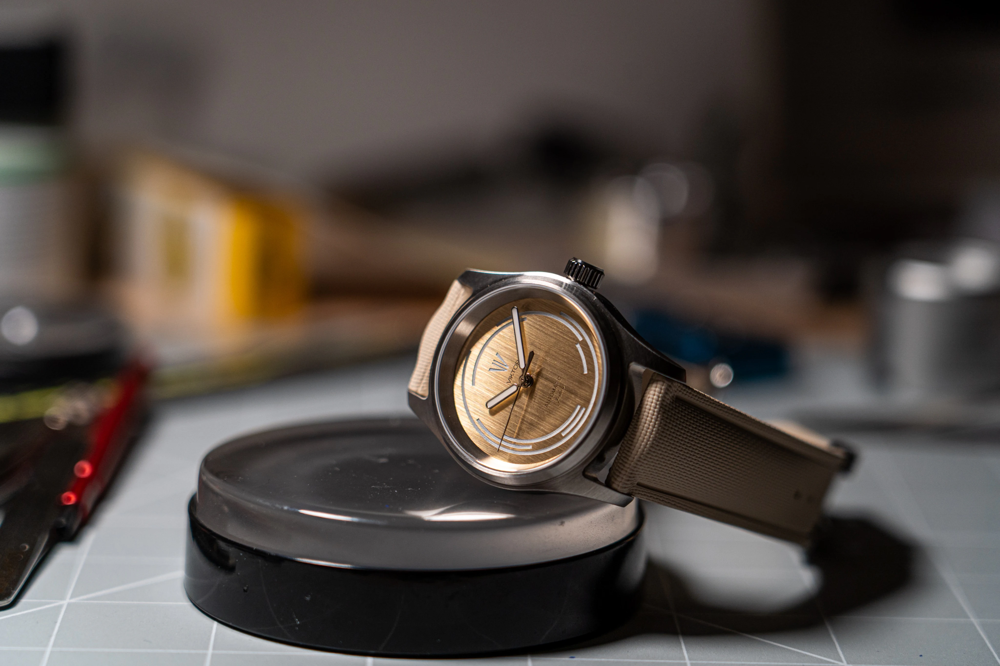
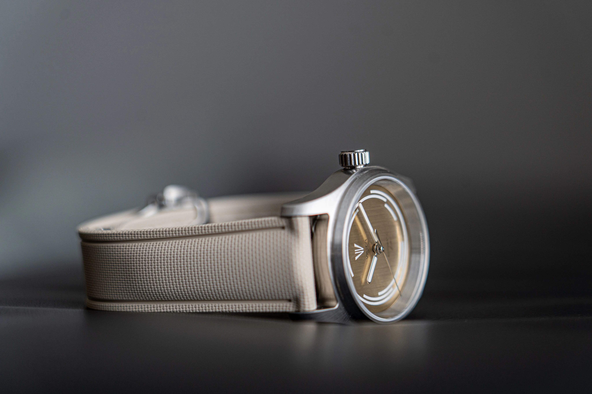
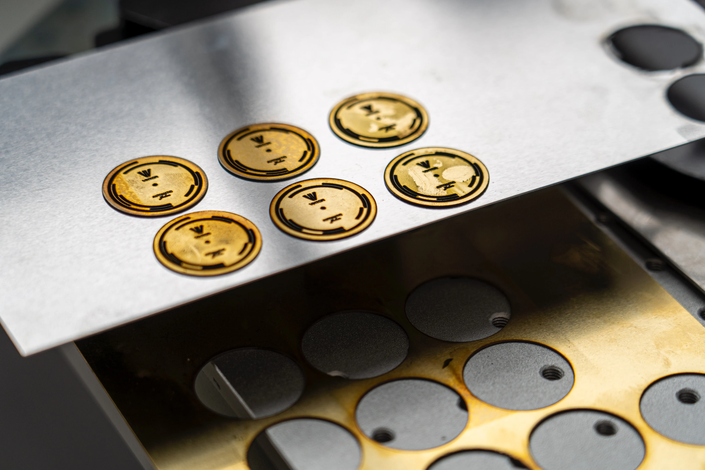
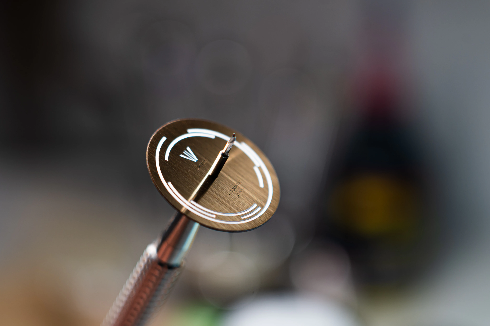
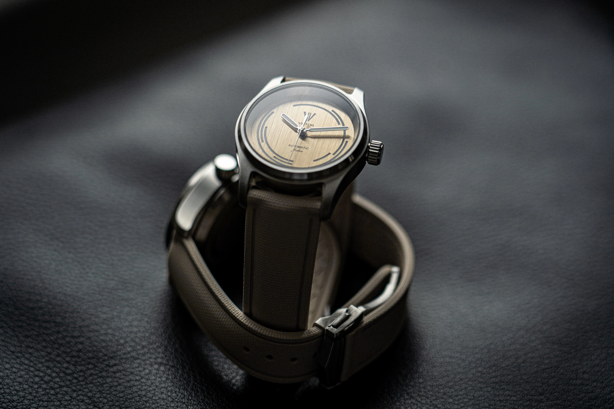
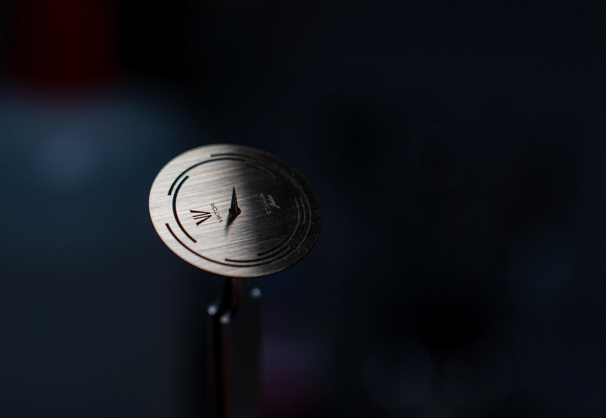

01 Series
Model Jedan
The first Viktor Watch, built from years of sketches, prototypes, failed attempts, and repeated refinement.
Current offering
Model "Jedan"
A finished watch born from the process behind the brand: hand-sanded, hand-painted, tested, reconsidered, and refined again and again.
- Case
- 316L stainless steel
- Movement
- Seiko NH35
- Dial Finish
- Hand-sanded and hand-painted
- Strap
- Beige rubber, 20mm
- Crystal
- Sapphire
- Specs
- 36mm, 11.85mm, 100m WR






